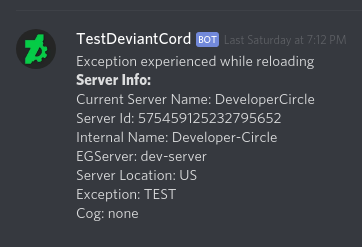

Errite Error Notifier¶
Warning
AutoError Reporting is only enabled by default for the DeviantCord public bot hosted by us. Though the same functionality can still enabled manually on self hosting to report errors to any Discord Server the bot user resides on by whoever is hosting the bot. If you are unsure that this functionality on is enabled use erritetoggle to disable it. It will let you know.
AutoError reporting was introduced to the DeviantCord public bot in bt-1.3.0. It notifies DeviantCord staff of issues encountered with the bot so that the appropriate action can be taken, and for faster response in the instance that issues are encountered that may not be apparent otherwise. This functionality is not mandatory and can disabled using the erritetoggle command.
Any message sent by the Error Notifier will never contain personal identifying information of users. The Error Notifier can send the following information
- Current name of Discord server
- Discord server id
Listener Related Exceptions Only
- artistname
- foldername
Messages sent by the Error Notifier are kept securely and only the Support Team has access. An example message from the error notifer can be seen below for the reload command.
Still have questions regarding the Error Notifier? Ask your questions on our Discord server here.